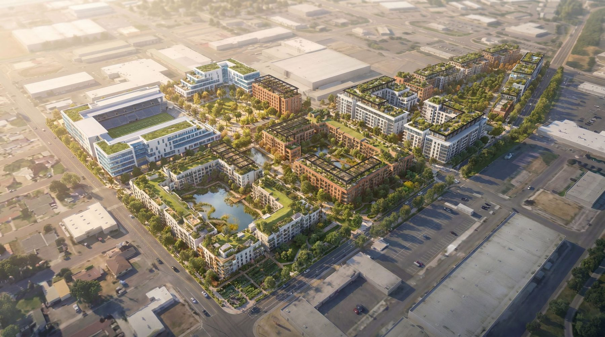
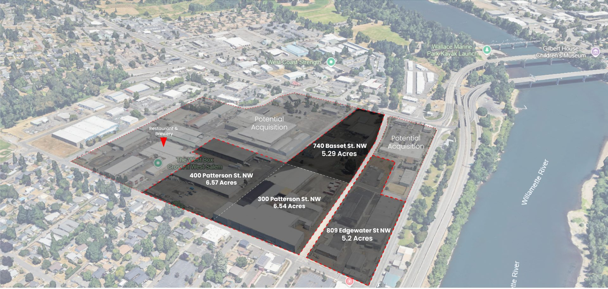
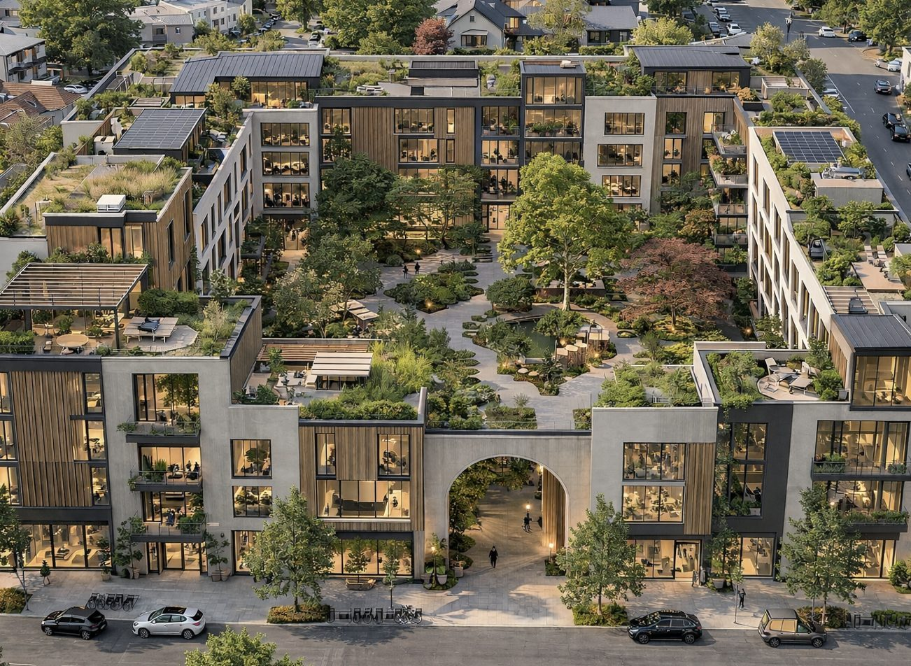
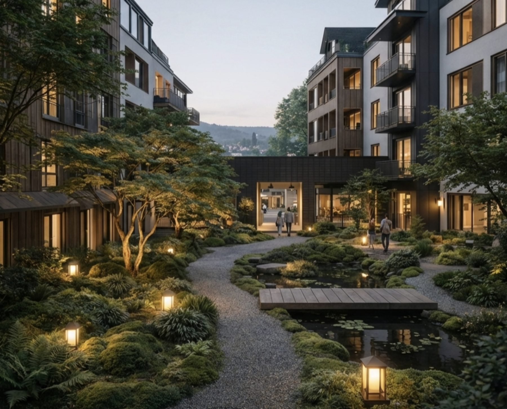

Now City
West Salem
Confidential Investment Summary
A rare window where land use, policy, and market momentum align
In Salem, Oregon, the under-appreciated capital, Now City is catalyzing the transformation of an aging light-industrial corridor into a high-density, mixed-use innovation and entertainment district. The City has already rezoned the area to support this shift, creating a rare window where land use, policy, and market momentum are aligned.
Now City's strategy begins with an incrementally phased 5.29-acre mixed-use development (Phase One) and scales across the ~22-acre district assemblage, activate regional mobility and landmark attractions, and deploy a new generation of regenerative urban infrastructure across the district.
Regionally, the project is strategically aligned with Oregon's expanding Silicon Forest innovation economy, including Oregon State University in nearby Corvallis, home to the Jen-Hsun Huang and Lori Mills Huang Collaborative Innovation Complex for AI, robotics, semiconductors, climate science, and ag-tech.
The district at completion
A small amount of catalytic capital, unlocking district-scale value
The district's economics are built on assembly and value creation: modest platform capital secures the land and funds the work that turns a fragmented 22-acre corridor into an entitled, shovel-ready development pipeline.
Illustrative district-scale figures, company underwriting (June 2026). Phase-level economics are detailed in Section 06 and in the underwriting model.
The entry point: capitalizing Phase 1 pre-development
Raising: $8.3 Million - First-Round GP Equity
Pre-development capital for the 5.29-acre Phase One - uses over the next 18–24 months:
- Land acquisition / contribution - securing the 740 Bassett parcel through the JV structure
- Entitlements, design & permitting - carrying the project to shovel-ready
- Developer fees & operating costs - legal, fundraising, and team through financial close
- Contingency
First-round GP equity converts to a carried position in the Phase One capitalization: $149.4M total cost, $99.6M construction debt, $48.8M total equity.
Co-GP Financial Overview
Co-GP position of ~$4.9M (10% of Phase One equity); simplified waterfall, base case
- High-impact OZ + URA incentives - any gains from tax credits flow straight to investors as additional upside beyond the modeled promote
- Low basis, high design quality
Opportunity Zone Position
The district parcels sit within the City of Salem's designated West Salem Opportunity Zone - one of four OZs in the city (City of Salem). Under the One Big Beautiful Bill Act, Opportunity Zones are now a permanent program, with updated designations taking effect January 1, 2027 (IRS). The project entity structure is QOF/QOZB-compatible: OZ-eligible investors can pursue the 10-year basis step-up through Exit Window D, while the underwriting stands on its own without OZ benefits. We are in active conversations with OZ fund investors.
Multiple capital pathways - OZ-eligible equity, strategic equity, bridge + equity, HUD financing, and a hybrid stack - are detailed in the Business Plan capital formation strategy.
The District Scale Vision
Now City West Salem is a next-generation urban district designed for everyday vitality, prosperity, and long-term resilience - integrating housing, work, play, food, wellness, and mobility into a connected daily experience.

District phasing
Per the Phased Development Business Plan - each phase is sequenced as absorption and revenue justify expansion.
Phase 1 · 5.29 AC
Innovation District + Residential Catalyst
Mark May Parcel · 740 Bassett St NW
Phase 2 · 6.50 AC
Courtyard Residential Neighborhood
300 Patterson St NW
Phase 3 · 6.50 AC
Sports & Entertainment District
400 Patterson St NW
Phase 4 · 3.9 AC
Riverview Penthouses & Multifamily
809 Edgewater St NW
Phase 0 (site control, due diligence & capital formation) and Phase 0B (West Salem Works interim activation) precede and de-risk vertical development - see the Business Plan.
Phase 1 - 740 Bassett: The First Block
Designed around Scandinavian courtyard urbanism and Japanese garden philosophy. Inspired by Copenhagen's courtyard urbanism and Japanese spatial calm, the block creates family-friendly density with a quiet interior garden and walkable retail edges.
Phase 1 Unit Mix & Cost Basis
Underwriting basis - 400 units / 279,000 SF NRA across four buildings (two rental, two for-sale candidates)
| Unit Type | Units | SF / Unit | Monthly Rent | Rent / SF | Est. All-In Cost / Unit |
|---|---|---|---|---|---|
| Studio | 20 | 400 | $1,233 | $3.08 | $143,000 |
| Jr. 1 Bedroom | 40 | 525 | $1,573 | $3.00 | $188,000 |
| 1 Bedroom | 160 | 575 | $1,731 | $3.01 | $206,000 |
| 1 Bedroom + Office | 40 | 700 | $2,037 | $2.91 | $251,000 |
| 2 Bedroom | 100 | 850 | $2,510 | $2.95 | $305,000 |
| 2 Bedroom + Office | ~35 | 1,100 | $3,359 | $3.05 | $394,000 |
| 3 Bedroom Townhome | ~5 | 1,292 | $4,113 | $3.18 | $463,000 |
| Total / Weighted Avg | 400 | 698 | $2,088 | $2.99 | $250,000 |
Rents are the modeled long-term rental rates (standard delivery; an enhanced co-living/ORI delivery scenario underwrites ~20% higher rents per SF). Cost basis: total Phase One development cost ($149.4M, including land, parking, amenities, and financing) allocated pro-rata across net rentable area (≈$358/SF), applied to each unit's NRA. A revised block-level design with larger average units is in design development and will be reflected in the next underwriting update.



Phase 1 Sources & Uses
Phase One development budget - base case (June 2026)
| Uses | Amount |
|---|---|
| Land (acquisition & development) | $10.9M |
| Hard costs | $108.0M |
| Soft costs | $16.1M |
| Other costs | $1.1M |
| Financing costs | $13.4M |
| Total | $149.4M |
| Sources | Amount |
|---|---|
| Construction loan (~65% LTC, 7%) | $99.6M |
| Grants / SDC credits | $1.0M |
| Equity - GP pre-development | $8.3M |
| Equity - contribution in kind | $3.8M |
| Equity - cash | $36.7M |
| Total | $149.4M |
Phase 1 Baseline Returns
Phase One underwriting - levered, base case (June 2026)
Green infrastructure delivery adds ~$14.2M of projected profit versus a traditional-infrastructure approach to the same program.
Phase One - the disciplined entry point
Phase 1 is structured as a disciplined, revenue-generating entry point that validates demand, underwriting, and execution ahead of district-scale expansion.
- Phase 1: 5.29 AC mixed use - 400 multifamily units + amenities (phased construction)
- 40,000 SF of commercial (experiential retail + F&B + tech innovation flex office)
- Immediate regional draw: serving Keizer, Albany, Corvallis, south Portland suburbs
- Opportunity Zone + Urban Renewal Area for stacked tax advantages
Engines that pull people in - before and beyond the real estate
The underwriting stands on housing fundamentals alone. These catalysts are the upside: each one converts regional attention into foot traffic, rent, and land value.
The Salem Forest Tower
A spiraling, fully accessible timber landmark visible from I-5 - a walk up through Native American history, biodiversity, and biophilia to a river view that resets how Salem sees itself. The Danish precedent (EFFEKT's Camp Adventure tower, 2017) draws a developer-reported ~300,000 annual visits and reportedly recovered its cost in year one. As an OpCo attraction: ticketed visits, events, and retail spillover across the district.
Whoosh Transit Circulator
Swyft Cities' cable-based autonomous network (born at Google) - nonstop, no-wait, faster-than-car trips linking West Salem to downtown, Riverfront Park, and Willamette University. Irvine's independent forecast for the Great Park: 27,000 daily riders, 4x a traditional circulator's ridership at one-sixth the operating cost per trip. For the district: parking optimization frees land value, and connectivity widens the renter and retail catchment.
Activation Now
Now City Market, the bow-truss live-work campus, the sports & wellness pilot, and the Arts District begin generating lease income to PropCo and proof-of-demand years before vertical completion - de-risking lease-up for every later phase. Detail on the Activation page.
Why Salem, why now
Nature, access, and undervalued quality of life. Salem sits at the heart of the Willamette River Valley, one of the most livable and productive regions in the U.S. - rare proximity to world-class nature, a growing innovation economy, and a lower-cost, under-recognized lifestyle advantage.
The Next Silicon Story: Why Salem Is Poised
State capitals like Austin saw rents nearly double in 10 years; Denver grew 32% in 5 years. With property values more than doubled in those markets, Salem is next.
Salem, OR · Silicon Forest
- Population (2025): 180K
- 2025 rent: $1,600/month
- Cycle position: ground floor, high upside potential
- Tech: Nvidia, Intel, Oregon State University
Denver, CO
- Population (2010 → 2020): 600K → 715K
- 2015–2025 rent increase: $1,184 → $1,672/month (+41%)
- Cycle position: middle, more potential upside
- Tech: Arrow, Palantir HQ, big tech offices
Austin, TX · Silicon Hills
- City population (2010 → 2020): 790K → ~979K
- 2015–2025 rent increase: $1,200 → $2,500/month (+92%)
- Cycle position: mature
- Tech: Tesla, Oracle, UT-Austin, big tech offices
Why Salem
- 45 minutes to Portland (international airport, talent, culture)
- 60 minutes to the Oregon Coast
- Surrounded by vineyards, farms, rivers, and forests
- Four-season outdoor living (hiking, cycling, water, wine, mountains)
- Strong in-migration from California and the Pacific Northwest
- Undervalued relative to quality of life and long-term upside
City of Salem Alignment
- Expands Salem's long-term tax base while preserving near-term employment
- Delivers housing supply calibrated to local incomes and workforce needs
- Activates the Willamette Riverfront and strengthens west–east connectivity
- Reduces infrastructure strain through walkability and daily services
- Phases density, traffic, and investment with absorption thresholds
- Captures regional growth while maintaining local control and fiscal discipline
Oregon State Alignment
- Strengthens housing supply, job creation, and long-term tax base growth at once
- Phased, infrastructure-aligned approach supporting workforce stability
- Aligned with statewide housing production and talent retention goals
- Advances OZ and urban renewal tools without public balance-sheet risk
- Supports construction, small business, and innovation-sector employment
- A replicable district framework for mid-sized Oregon cities
The full community & regional alignment story, with the places themselves, lives on The District → For Salem & Oregon.
The Migration Tailwind
In United Van Lines' 49th annual National Movers Study (2025), Oregon ranked #1 in the nation for inbound movers, with roughly 65% of shipments coming into the state. It was the first time in nearly 50 years that Oregon topped the list. The destination was not Portland: Salem ranked #7 among all U.S. metro areas for inbound moves, while Portland ranked 30th. California supplied 22% of Oregon's inbound movers, with Washington, Colorado, Texas, and Montana also contributing, and nearly half of inbound households reported annual incomes of $150,000 or more (Oregon Capital Chronicle).
Portland State University's Population Research Center estimates net in-migration of roughly 17,000 residents to Oregon from June 2024 to June 2025. The pattern is movement away from the expensive West Coast metros toward the mid-Willamette Valley: higher-income households choosing livability, access, and cost. Salem is where they are landing, and where the housing has to be built.
The Evidence, In One Place
Demand
- <2% vacancy in the core market; 636 units of unmet demand
- 54% renter households within 1.5 miles; renters paying 36–37% of income
- Median income rising from $58,860 (2024) to a projected $67,159 (2030)
Location
- Wallace Road: 30,000+ daily trips at the district's edge
- 5,300 businesses and 63,000+ workers within 3 miles
- 45 minutes to OSU's Huang Innovation Complex; I-5 corridor access
Spending
- $275M+ retail leakage within 1.5 miles
- ~$7M unmet food & beverage demand
- $60K+ average disposable income; thin competitive pipeline = first-mover pricing
The thesis in one line: as OSU graduates AI, robotics, and materials-science talent into Oregon's economy from 2026 onward, West Salem is positioned to house, employ, and entertain it - in a supply-constrained, renter-dominant market with by-right zoning already in place.


Land Comparables

Sale comparables analysis - likely market value indication ~$1.78M ($34,977/unit basis). Full workup available to qualified investors.
Baseline financials, sources & uses, and sensitivity
Underwriting reflects a conservative base case. Pre-development value-add strategies are activated to improve returns for GPs and LPs beyond the modeled base.
Want to pressure-test the assumptions yourself? The interactive underwriting dashboard runs the full Phase One model live in your browser: move rents, costs, cap rates, and timing, and watch returns, cash flow, and lender metrics respond instantly.
Phase 1 Baseline
5.29 acres at 740 Bassett St NW - base case (June 2026)
District Baseline
~22 acres, 1,000 units - base case (June 2026)
Exit Optionality - Returns by Window
Rolling stabilization creates recurring liquidity windows. Simplified annual basis; figures are indicative and move with assumptions.
| Window | Timing | What sells | Equity Multiple | Approx. IRR |
|---|---|---|---|---|
| A - Phase 1 recapitalization | ~Year 4 | Phase 1 sale or refinance | 1.7x | ~15% |
| B - Residential portfolio | ~Year 6 | Phases 1–2 stabilized residential | 2.3x | ~15% |
| C - District completion | ~Year 8 | Full district or components | 2.6x | ~13% |
| D - Extended / OZ hold | Year 10+ | Optional 10-yr OZ basis step-up | 3.5x | ~13% |
Geometric IRR on a simplified annual model - conservative versus the monthly pro forma (Phase 1 standalone underwrites to 20.3% levered IRR). Co-GP returns under the simplified waterfall: ~2.3x at Window A rising to ~6.0x at Window D.
Operating Expenses increment 5.00%
| OpEx | Diff | Delta | Project IRR | Avg LP CoC | LP IRR | LP Multiple | LP Profit | GP Profit |
|---|---|---|---|---|---|---|---|---|
| $4,633,390 | $421,217 | +10% | 28% | 8% | 30.4% | 2.0x | $18,462,782 | $8,666,165 |
| $4,422,782 | $210,609 | +5% | 29% | 8% | 31.9% | 2.0x | $19,488,492 | $9,257,040 |
| $4,212,173 | $0 | 0% | 30.4% | 8% | 33.5% | 2.1x | $20,514,202 | $9,847,915 |
| $4,001,564 | -$210,609 | -5.00% | 31.62% | 8.20% | 35.0% | 2.1x | $21,539,912 | $10,438,790 |
| $3,790,956 | -$421,217 | -10.00% | 32.83% | 8.50% | 36.5% | 2.2x | $22,565,622 | $11,029,665 |
Rents on Operated Units increment 2.50%
| Rents | Diff | Delta | Project IRR | Avg LP CoC | LP IRR | LP Multiple | LP Profit | GP Profit |
|---|---|---|---|---|---|---|---|---|
| $5,364,219 | -$282,327 | -5% | 28% | 8% | 30.4% | 2.0x | $18,462,782 | $8,764,644 |
| $5,505,382 | -$141,164 | -2% | 29% | 8% | 31.9% | 2.0x | $19,488,492 | $9,306,280 |
| $5,646,546 | $0 | 0% | 30.4% | 8% | 33.5% | 2.1x | $20,514,202 | $9,847,915 |
| $5,787,710 | $141,164 | +2.50% | 31.54% | 8.20% | 35.0% | 2.2x | $21,539,912 | $10,389,550 |
| $5,928,873 | $282,327 | +5.00% | 32.68% | 8.50% | 36.5% | 2.2x | $22,565,622 | $10,931,186 |
Vacancy increment 2.50%
| Vacancy | Diff | Delta | Project IRR | Avg LP CoC | LP IRR | LP Multiple | LP Profit | GP Profit |
|---|---|---|---|---|---|---|---|---|
| 10% | n/a | +6% | 26% | 7% | 27.8% | 1.8x | $16,821,646 | $7,779,853 |
| 7.5% | n/a | +4% | 28% | 7% | 30.2% | 2.0x | $18,360,211 | $8,641,545 |
| 5% | n/a | +1% | 30.4% | 8% | 33.5% | 2.1x | $20,514,202 | $9,847,915 |
| 2.5% | n/a | -1.50% | 31.54% | 8.20% | 34.9% | 2.2x | $21,437,341 | $10,364,931 |
| 0% | n/a | -4.00% | 33.44% | 8.60% | 37.2% | 2.3x | $22,975,906 | $11,226,623 |
Interest on Construction Loan increment 0.50%
| Rate | Diff | Delta | Project IRR | Avg LP CoC | LP IRR | LP Multiple | LP Profit | GP Profit |
|---|---|---|---|---|---|---|---|---|
| 8% | +100 bps | +1% | 30% | 8% | 32.9% | 2.1x | $20,144,946 | $9,631,261 |
| 7.5% | +50 bps | +1% | 30% | 8% | 33.2% | 2.1x | $20,329,574 | $9,739,588 |
| 7% | 0 bps | 0% | 30.4% | 8% | 33.5% | 2.1x | $20,514,202 | $9,847,915 |
| 6.5% | -50 bps | -0.50% | 30.58% | 8.00% | 33.7% | 2.1x | $20,698,830 | $9,956,242 |
| 6% | -100 bps | -1.00% | 30.76% | 8.10% | 34.0% | 2.1x | $20,883,458 | $10,064,569 |
Interest on Refi Loan increment 0.50%
| Rate | Diff | Delta | Project IRR | Avg LP CoC | LP IRR | LP Multiple | LP Profit | GP Profit |
|---|---|---|---|---|---|---|---|---|
| 8% | +100 bps | +1% | 30% | 8% | 21.4% | 2.1x | $20,062,890 | $9,572,173 |
| 7.5% | +50 bps | +1% | 30% | 8% | 21.6% | 2.1x | $20,288,546 | $9,710,044 |
| 7% | 0 bps | 0% | 30.4% | 8% | 33.5% | 2.1x | $20,514,202 | $9,847,915 |
| 6.5% | -50 bps | -0.50% | 30.63% | 8.10% | 22.0% | 2.1x | $20,739,858 | $9,985,786 |
| 6% | -100 bps | -1.00% | 30.86% | 8.10% | 22.2% | 2.1x | $20,965,514 | $10,123,657 |
From site control to exit
The development plan follows the value creation sequence set out in the Phased Development Business Plan: Control Land → Create Value → Build Catalyst Phase → Expand District → Stabilize → Exit.
Phase 1 · M0–M12
- LOI execution
- Due diligence
- Master planning
- Entitlements
- Capital raise
- Financing commitments
Phase 1 · M12–M34
- Phased construction - multifamily, retail, office
Phase 1 · M24–M46
- Lease-up
- Operational stabilization & financial seasoning
- Innovation district activation
- Project sale, refinance, or roll over to full district
Numbers tell you it works. The place tells you why it matters.
The full district experience - every rendering, the landmark Forest Tower, the Whoosh mobility network, and the impact & placemaking framework - lives on The District page.
Built around the work in front of us
Now City operates as a district strategy and systems integrator, supported by a growing bench of development, construction, infrastructure, and operating partners. This model allows Phase 1 and early district phases to be executed by experienced local and regional teams with direct market knowledge, while Now City maintains continuity of vision, performance standards, and long-term district control. As the platform scales, execution capacity scales with it - through joint ventures, operating partnerships, and institutional collaborators aligned with district-level outcomes.
Leadership

Erik Gillberg
Erik is a systems thinker focused on aligning capital, design, and operations into development that is financially viable, operationally sound, and grounded in care. He brings 30 years of property operations and 20 years in technology, business development, and startup leadership.

Ritchie Ju
Ritchie leads design, development, and operations. B.Architecture from Carnegie Mellon, MS in Architecture and Urban Design from Columbia, MBA candidate at Johns Hopkins. Previously a mobility planner at Lyft in New York, where he led bike-share expansion, and later supported capital raise and development of a 1,000-unit multifamily mixed-use project in NYC.
Senior Advisors
We work with senior advisors whose expertise is directly load-bearing for the work.

Michael H. Shuman
Michael is an economist, attorney, and one of the architects of the 2012 JOBS Act. Adjunct Professor at Bard Business School and author of Put Your Money Where Your Life Is, The Local Economy Solution, and others. He advises Now City on community-rooted ownership, local capital formation, and finance models that keep wealth in place.

Neal Payton
Neal, FAIA, FCNU, directs the western U.S. urban and architectural design practice at Torti Gallas. His work focuses on master plans, form-based codes, and the public realm - especially the revitalization of declining urban centers, brownfields, and aging suburbs. He advises Now City on urbanism, master planning, and entitlement strategy.
Maxumal Development Partnership
The Maxumal executive team brings design, engineering, finance, and delivery experience directly relevant to building 1,000 homes well, fast, and at attainable cost.
Carl Gillberg
Carl has spent more than 20 years designing and building custom homes and multifamily live/work lofts in downtown San Diego and across California. As chairman of the redevelopment plan subcommittee of San Diego's Project Area Committee, he helped shape the plan that turned central downtown San Diego into the economic and cultural hub it is today. A licensed general contractor, Carl is the designer of the SIPrails system and leads design and innovation at Maxumal. For the district, that means homes engineered for fabrication from the first sketch. B.A., Cal Poly San Luis Obispo.
Nancy Curtis
Nancy is a business strategist with a 20-year record of generating over $3B in added value for Fortune 100 companies, with deep capability in market analysis, financial modeling, and operational execution. At Maxumal she leads strategy and operations. Her focus for West Salem is the manufacturing economics: ensuring off-site fabrication actually delivers the cost, schedule, and quality advantages the district's attainable housing program depends on. MBA, George Mason University.
LeRoy West
LeRoy founded New West Homes and built more than 100 custom prefab homes across Southern California, then led the Yellow Hills Ranch project: a 300-home sustainable community on 4,700 acres with a solar farm and nature preserve. Few people have taken prefab housing from factory to finished neighborhood at this scale. He brings that delivery experience, plus operations leadership of 120-person technical teams, to the district's phased housing program.
Randy Jensen
Randy, a CPA with over 20 years in real estate accounting and tax strategy, has secured Low Income Housing Tax Credit and bond financing for 375 affordable housing communities, primarily in the Salt Lake City market, without a single failed application. Attainable rents are made in the capital stack, and Randy's command of LIHTC, bond, and layered public-private financing directly serves the district's commitment to housing calibrated to local incomes. B.S. with honors, Brigham Young University; AICPA and UACPA.
Dan Campbell
Dan, PE/SE, is a forensic structural engineer with unlimited-height qualifications, licensed in seven states, whose portfolio includes the New York-New York Hotel & Casino Statue of Liberty, the MGM Theme Park, and decades of high-profile commercial and residential work. He directs the engineering of the SIPrails system and oversees final working drawings, so the district's fabricated buildings carry conventional-or-better structural standards. B.S. Architectural Engineering, Cal Poly San Luis Obispo.
Carol Ackerman
Carol has spent over 20 years assembling A/E/C teams and carrying high-stakes projects through public hearings to approval, with executive master-planning experience on community, resort, and mixed-use ventures totaling over $7B in market value, and over $800M in MOU pre-sale agreements secured. Districts live or die in the public process, and Carol's community outreach and entitlement work is aimed at exactly that: earning Salem's confidence hearing by hearing. She has worked across the US and ten countries and is a published author.
Value Add Strategies: How We Deliver More Without Spending More
AI-native development, advanced modeling, data intelligence, automation, and modern delivery methods reduce design friction, compress timelines, lower soft costs, and provide the reporting backbone institutional capital now requires.
Regenerative Placemaking
Wellness, prosperity, and ecology data-driven community design.
Industrialized Construction
Modern methods that reduce cost, shorten schedules & minimize waste.
Green Infrastructure
Integrated energy, water & mobility systems that cut OpEx & boost resilience.
Innovative Finance
Stacked incentives + carbon & brand capital to enhance returns.
Addressing investor concerns directly
Disclaimers
All projections were made based on certain assumptions regarding revenues and costs of the project, among other things, which may not equate to actual results. Although the Manager believes these assumptions to be reasonable, actual results will differ from the Manager's assumptions and related projections may differ materially. A prospective investor, together with his or her financial and legal advisers, should independently evaluate the reasonableness of any assumptions or projections and should not place undue or significant weight on any projections by the Manager or any other persons related to the Manager. This presentation does not constitute an offer to buy or sell securities. Prospective investors should not rely in whole or in part on this presentation. An offering can only be made pursuant to delivery of a private placement memorandum and receipt of investment related documentation. The offer to invest in the securities and the sale thereof has not been registered under the Securities Act, or any state securities act. The securities are being offered and sold in reliance on exemptions from the registration requirements of such acts. These securities are being offered and sold only to bona fide residents of the states in which such exemption is available, who can meet certain requirements, including net worth and income requirements, and who purchase the securities without a view to distribution or resale.
All statements contained herein may constitute "forward-looking statements." Forward-looking statements are generally identifiable by the use of the words "may," "should," "plan," "expect," "anticipate," "estimate," "believe," "intend," "project," "goal," or "target" or the negative of these words or other variations of these words or comparable terminology. Forward-looking statements are based on current expectations and involve a number of known and unknown risks, uncertainties and other factors, many of which are beyond the Manager's control, that could cause the project's or its actual results, levels of activity, performance or achievements to be materially different from any future results, levels of activity, performance or achievements expressed or implied by such forward-looking statements. No representation is made or assurance given that such statements or views are correct or that the objectives of the Manager will be achieved. You should not place undue reliance on forward-looking statements and no responsibility is accepted by the Manager or any of its directors, officers, employees, agents or advisers, or any other person in respect thereof. The Manager does not undertake to publicly update or revise any forward-looking statements that may be made herein, whether as a result of new information, future events or otherwise.
The material contained in this document is confidential, furnished solely for the purpose of considering investment in the property described herein and is not to be copied and/or used for any purpose or made available to any other person without the written consent of the Manager. In accepting this, the recipient agrees to keep all material contained herein confidential.